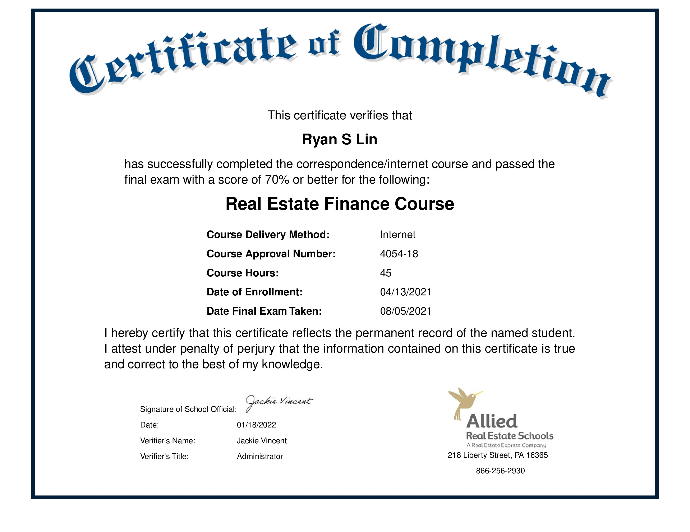
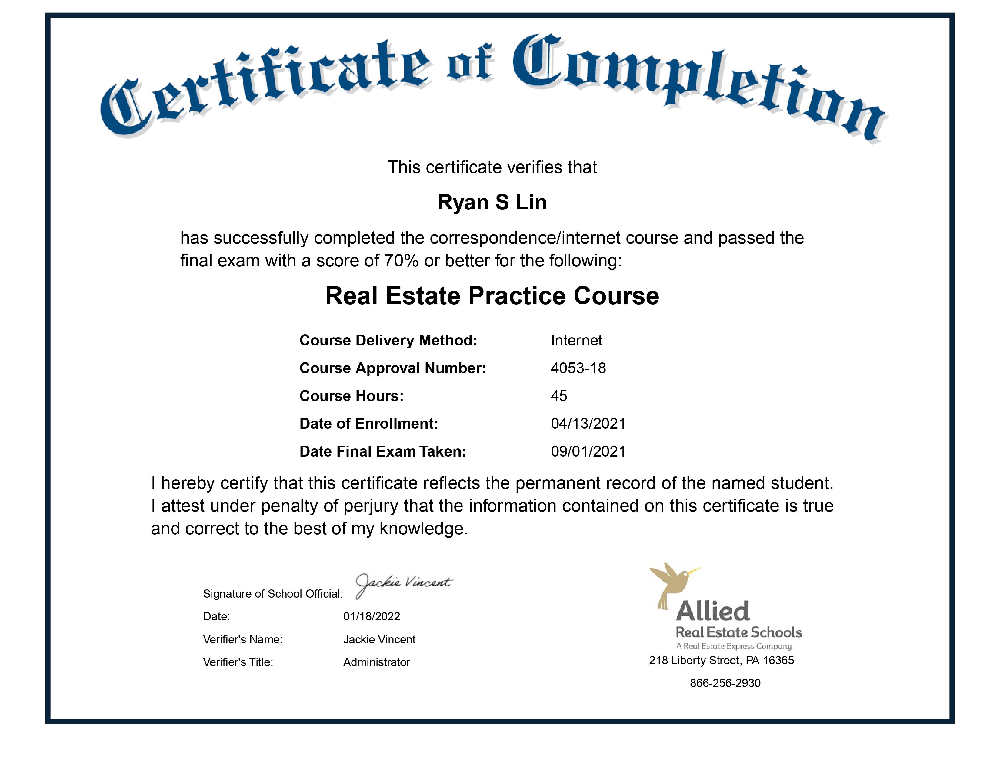
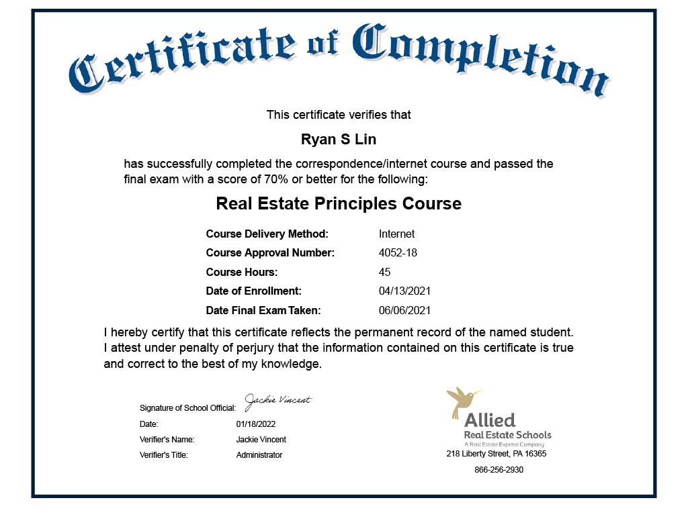
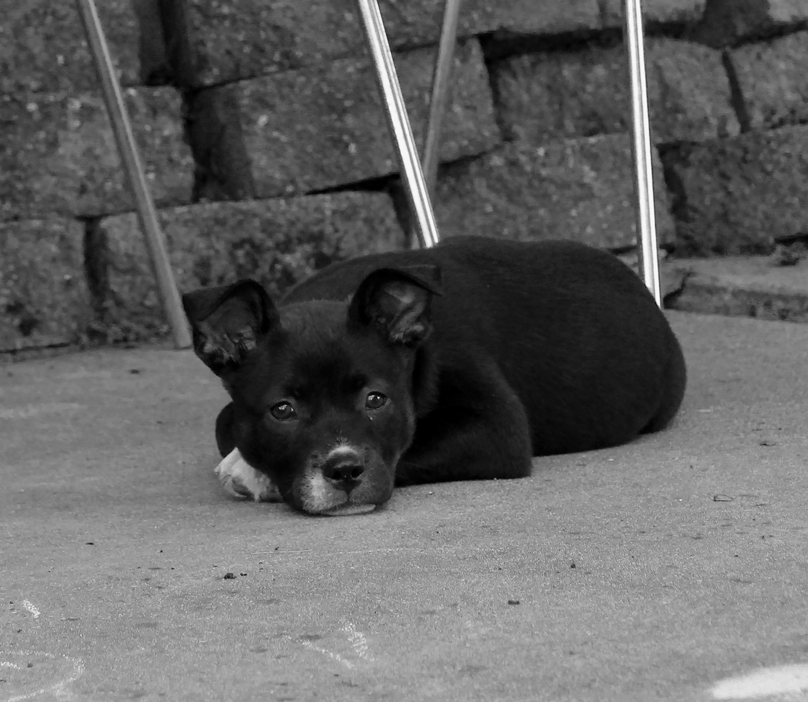
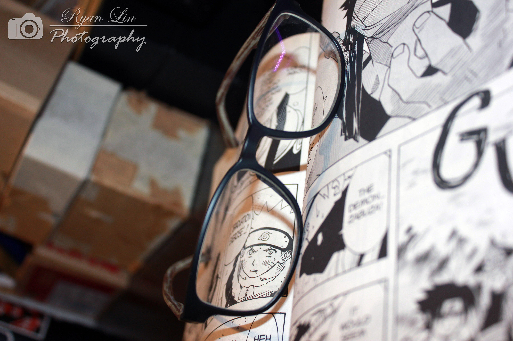
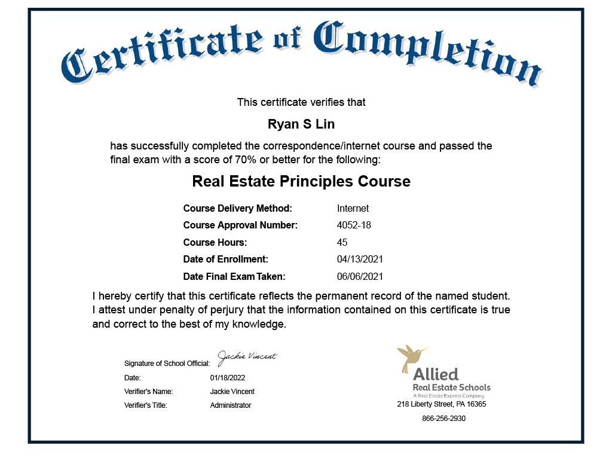
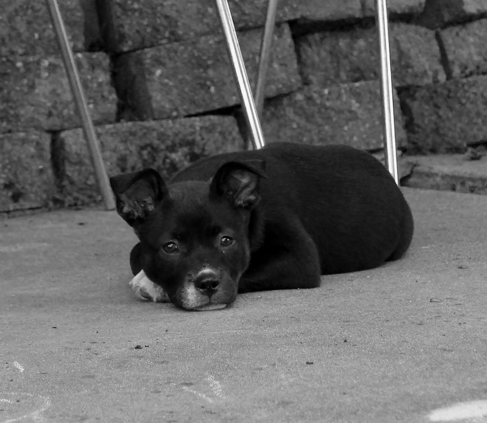
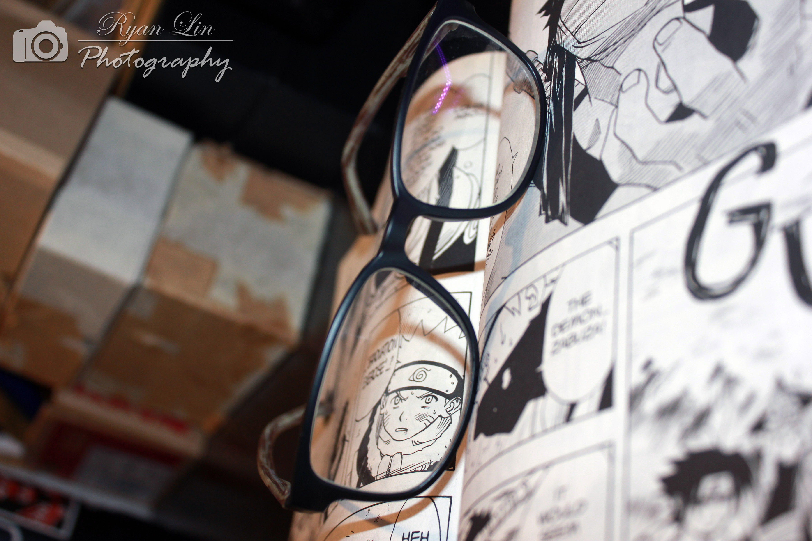

Ryan Lin
My name is Ryan Lin and I am currently a student at the University of California, Riverside. I am an aspiring business student developing a programming emphasis looking for opportunities to exhibit my skills on a professional level. I am an accomplished student and wish to further develop myself with the help of extracurricular passions. I enjoy using my skills to contribute to the exciting world of business, economics, and technology. My goal is to add value wherever it is needed and to maximize efficiency in all aspects. I am inspired by the numerous beautiful advances that we as a society see on a daily basis. In my free time, I enjoy sweating it out and reading books.
I am interested in opportunities related to finance, accounting, equity research, and real estate.
I am open to connecting so feel free to email me at ryanlinbusinesses@gmail.com
Experience
Sortation Warehouse Seasonal Associate
• Decisively stacked, wrapped, and stored pallets for delivery to keep workhouse environment clean
• Sorted packages coming in by zip code and processed packages that were received in the wrong center
Team Leader
•Advertised for our local "Streets Smarts" campaign and led a team of 5 that created over 10 safety markers
across the city of Fremont.
Team Leader/Volunteer
• Promoted team development by facilitating fundraising events that generated $1500 in gross profit over
the span of six months.
Member/Volunteer
•Partook in community development/revitalization activities which included beautification projects,
assisting at homeless shelters, etc.
Teacher Assistant/Tutor
•Supplemented student learning by optimizing and formulating instructional and creative exercises
•Utilized positive reinforcement tactics to improve student learning and raise the retention rate
Education
University of California Riverside
Mission San Jose High School
Portfolio









 